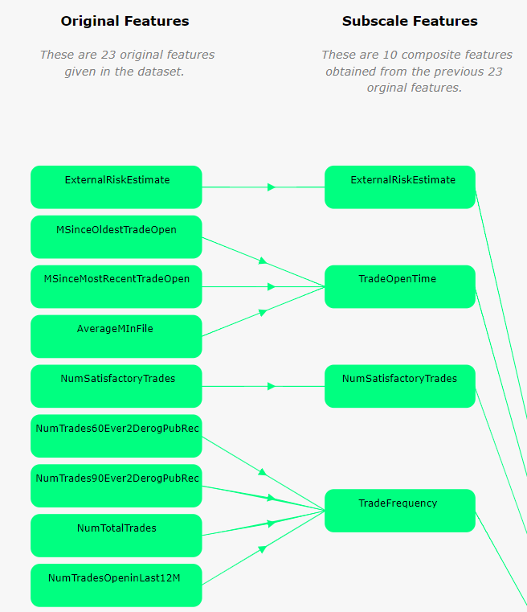
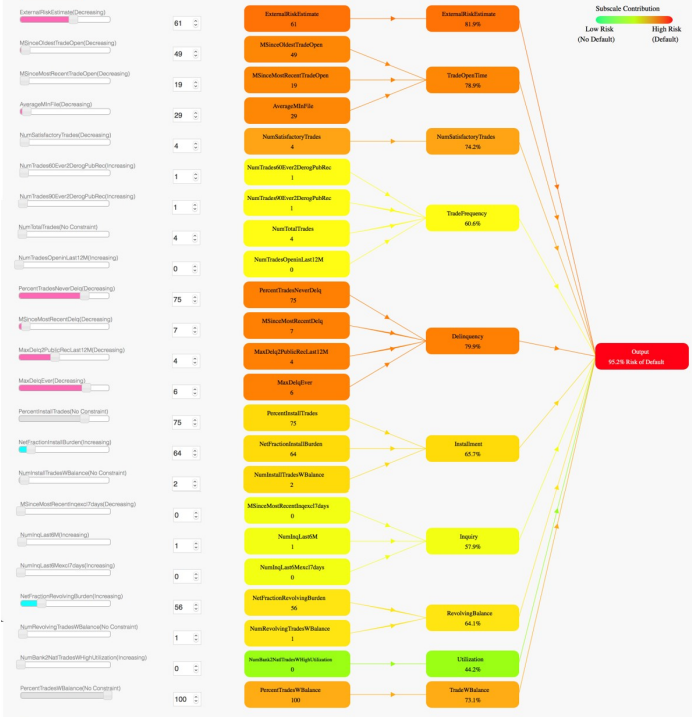
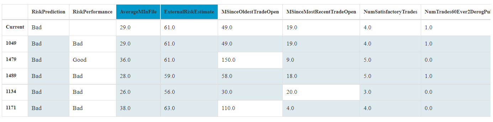

Last updated: 2022-04-29
Checks: 7 0
Knit directory: Interpretable-ML-Models/
This reproducible R Markdown analysis was created with workflowr (version 1.7.0). The Checks tab describes the reproducibility checks that were applied when the results were created. The Past versions tab lists the development history.
Great! Since the R Markdown file has been committed to the Git repository, you know the exact version of the code that produced these results.
Great job! The global environment was empty. Objects defined in the global environment can affect the analysis in your R Markdown file in unknown ways. For reproduciblity it’s best to always run the code in an empty environment.
The command set.seed(20220121) was run prior to running the code in the R Markdown file. Setting a seed ensures that any results that rely on randomness, e.g. subsampling or permutations, are reproducible.
Great job! Recording the operating system, R version, and package versions is critical for reproducibility.
Nice! There were no cached chunks for this analysis, so you can be confident that you successfully produced the results during this run.
Great job! Using relative paths to the files within your workflowr project makes it easier to run your code on other machines.
Great! You are using Git for version control. Tracking code development and connecting the code version to the results is critical for reproducibility.
The results in this page were generated with repository version 8fec623. See the Past versions tab to see a history of the changes made to the R Markdown and HTML files.
Note that you need to be careful to ensure that all relevant files for the analysis have been committed to Git prior to generating the results (you can use wflow_publish or wflow_git_commit). workflowr only checks the R Markdown file, but you know if there are other scripts or data files that it depends on. Below is the status of the Git repository when the results were generated:
Ignored files:
Ignored: .Rhistory
Ignored: .Rproj.user/
Ignored: analysis/.Rhistory
Untracked files:
Untracked: analysis/Harvard.csl
Untracked: analysis/style.css
Untracked: code/.ipynb_checkpoints/
Untracked: code/AIX_360_Credit_Data_Scientist.ipynb
Unstaged changes:
Modified: README.md
Deleted: analysis/about.Rmd
Note that any generated files, e.g. HTML, png, CSS, etc., are not included in this status report because it is ok for generated content to have uncommitted changes.
These are the previous versions of the repository in which changes were made to the R Markdown (analysis/Duke.Rmd) and HTML (docs/Duke.html) files. If you’ve configured a remote Git repository (see ?wflow_git_remote), click on the hyperlinks in the table below to view the files as they were in that past version.
| File | Version | Author | Date | Message |
|---|---|---|---|---|
| html | b743c90 | JJCoen | 2022-04-29 | Build site. |
| Rmd | e2f8b11 | JJCoen | 2022-04-29 | Add Duke and NYU |
The Duke team recommend the use of models that are domain-specific. So they emphasise engaging in knowledge discovery a priori. After engaging in such a process, it is possible to create a two-level hierarchy that compartmentalizes subsets of features into meaningful groupings known as “subscale features” (DukeModel?). Figure 1 groups features according to attributes that they have in common.
 Figure 1: Grouping of features elicits intent and meaning. Source: Chen (2018)
This level of interpretation is of use to all who interact with the model (Developer, Auditor, and Regulator). Figure @ref(fig:duke-global) shows how the sub-scales can be considered as a simplified model which, in turn, determines the overall probability of default. Feature values for specific loan applicants can be entered using the sliders on the left side.
 Figure 2: Global Model gives Probability of Default. Source: Chen (2018)
The use of colour is effective with shades from green to red signifying low to high risk. This global model graph is of interest to all stakeholders.
Similar to the AIX 360, feature values are split into intervals or bins. In this case, the 23 features are transformed into 182 bin. In addition, these include indicator variables when an entry is missing, unlike AIX 360.
The model gives the top four factors that lead to a “Good” or “Bad” prediction. These factors are expressed as predicates on specific values. In the case of Demo 1 in the web interface, these are:
Such information is of helpful to a service user or customer who was refused a loan. A regulator can check that loan applicants receive sufficient explanation when they are denied.
However, it would be of greater benefit to know what values these features need to be in order to achieve approval. There are post-hoc algorithms within the AIX 360 toolkit that can provide such detail.
The model considers the current application in relation to all previous applications. It derives a feature based rule that is consistent over the greatest number of past cases. For instance, with regards the Demo 1 case, there were 594 applications that satisified the rule: \[ \text{ExternalRiskEstimate} \le 63 \text{ AND AverageMInFile} \le 48 \] and all of them went into default. These types of explanations give the developer, auditor and regulator insight into how the model operates for groups of customers. They can help the developer check that a model is operating as expected. The internal auditor and the regulator can ascertain that types of customers are being treated fairly.
Figure @ref(fig:duke-case-based) shows a case under consideration (current) alongside previous applications with similar feature values (light blue shading). Only the first six features are shown. This figure provides additional information to a financial officer when deciding upon a loan application. By comparing the prediction with actual outcome, the model assists the officer to use their judgement when arriving at a decision.
 Figure 3. Comparison with cases similar to current applicant. Source: Chen (2018)
Where the Duke model is lacking in corrective actions to change a “Bad” classification to “Good”, the New York University provides a succinct and effective solution.
sessionInfo()R version 4.1.2 (2021-11-01)
Platform: x86_64-w64-mingw32/x64 (64-bit)
Running under: Windows 10 x64 (build 22000)
Matrix products: default
locale:
[1] LC_COLLATE=English_United States.1252
[2] LC_CTYPE=English_United States.1252
[3] LC_MONETARY=English_United States.1252
[4] LC_NUMERIC=C
[5] LC_TIME=English_United States.1252
attached base packages:
[1] stats graphics grDevices utils datasets methods base
other attached packages:
[1] workflowr_1.7.0
loaded via a namespace (and not attached):
[1] Rcpp_1.0.8 bslib_0.3.1 compiler_4.1.2 pillar_1.7.0
[5] later_1.3.0 git2r_0.29.0 jquerylib_0.1.4 tools_4.1.2
[9] getPass_0.2-2 digest_0.6.29 jsonlite_1.7.3 evaluate_0.15
[13] tibble_3.1.6 lifecycle_1.0.1 pkgconfig_2.0.3 rlang_1.0.1
[17] cli_3.2.0 rstudioapi_0.13 yaml_2.3.5 xfun_0.29
[21] fastmap_1.1.0 httr_1.4.2 stringr_1.4.0 knitr_1.37
[25] sass_0.4.0 fs_1.5.2 vctrs_0.3.8 rprojroot_2.0.2
[29] glue_1.6.1 R6_2.5.1 processx_3.5.2 fansi_1.0.2
[33] rmarkdown_2.11 callr_3.7.0 magrittr_2.0.2 whisker_0.4
[37] ps_1.6.0 promises_1.2.0.1 htmltools_0.5.2 ellipsis_0.3.2
[41] httpuv_1.6.5 utf8_1.2.2 stringi_1.7.6 crayon_1.5.0